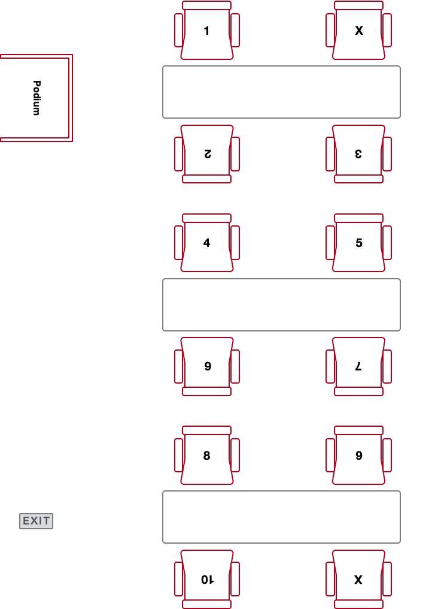
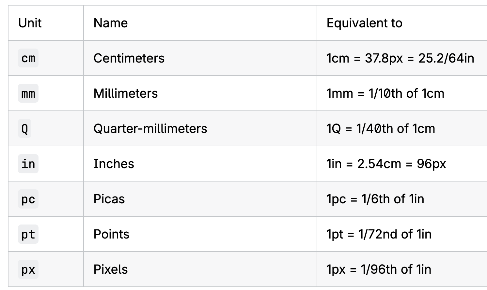

HCDD 340
CSS Intro (II)
Fixed seating arrangement for groups

Recap from last class
CSS rules contain selectors and declarations

Selectors
Different “patterns” to identify match elements
Universal selector (*) matches all elements
* {
margin: 0;
padding: 0;
box-sizing: border-box;
}Type selector matches corresponding HTML elements
section {
position: absolute;
top: 50%;
left: 50%;
margin-right: -50%;
transform: translate(-50%, -50%);
}Matches all <section>
elements
Type selector matches corresponding HTML elements
h4 {
font-size: 1em;
}Matches all <h4> elements
Class selector matches elements with a given class
.orange {
color: #f0a202
}styles.css
<h1 class="orange">HCDD 340</h1>
<h1>Goals</h1>
index.html
. is in CSS rules, but not in html
ID selector matches elements with the given id
#penn-state {
border: 1px solid #96BEE6;
}styles.css
<div id="penn-state">
We are!
</div>index.html
# is in CSS rules, but not in html
Attribute selector matches elements with a given attribute or a value
Select element if a given attribute is present
[data-college] {
color: #96BEE6;
}styles.css
<div data-college="IST">Information Sciences and Technology</div>
<div data-college="HHD">Health and Human Development</div>index.html
Both <div>s will match (i.e.,
attribute “college” is present)
Attribute selector matches elements with a given attribute or a value
Select element if the attribute has a given value
[data-college="IST"] {
color: #96BEE6;
}styles.css
<div data-college="IST">Information Sciences and Technology</div>
<div data-college="HHD">Health and Human Development</div>index.html
Only the first <div> will be
selected
Pseudo-classes
Pseudo-classes
Select a specific state of a given element (:)
h2:hover {
color: blue;
}Change outline when <h2> is
hovered
Pseudo-classes
Select a specific state of a given element (:)
p:nth-child(even) {
background: blue;
}All even paragraphs will have blue
background
Many pseudo-classes available
:first-child:last-child:visited
Pseudo-elements
Pseudo-elements
Specific part of a selected element (::)
p::first-letter {
color: goldenrod;
font-weight: bold;
}Changes the first letter of each paragraph — check it out
Pseudo-elements
::before and ::after for inserting elements
.exciting-text::after {
content: " <- EXCITING!";
color: darkgreen;
font-weight: bolder;
}
.boring-text::after {
content: " <- BORING";
color: darkviolet;
font-weight: bolder;
}Check out the example
Grouping selectors
Apply same rule to multiple selectors
h1, h2, h3, h4, h5 {
margin: 0 0 20px 0;
line-height: 1.2;
font-weight: bold;
}Separated by commas
Combinators
Combine selectors to select elements in relation to others
- Descendant
- Child
- Next-sibling
- Subsequent-sibling
Descendant combinator
Parent and descendant selectors separated by a space
p strong {
color: red;
}All <strong> elements within
<p> elements will have red color
Child combinator
Parent and children selectors separated by a >
div > p {
color: red;
}Only the direct children will be selected (more restrictive than descendant combinator)
Next sibling combinator
An element immediately follows another element within same parent (+)
img + p {
font-weight: bold;
}A paragraph that immediately follows an image (within same parent) will have bold text
Subsequent sibling combinator
An
element immediately follows another element within same
parent (~)
img ~ p {
}Any paragraph that immediately follows an image (within
same parent) will have bold text
What happens if there are no CSS rules for a given page? ü§î
A browser will apply default styles
What happens when multiple rules apply?
Handling conflicts
h1 {
color: red;
}
h1 {
color: blue;
}Handling conflicts
Cascading determines which rules actually apply
- Position and order
- Specificity
- Origin
- Importance
Class activity
Starter files here
- Unzip the file
- Open the folder in VS Code
- File –> Open Folder
- Click on Show Preview
- Top right corner
- Also, open
index.htmlin Chrome/Firefox
Todos
- Only change
styles.css - Paragraph directly after an
<h2>:- bold
- the first line: red
- Even rows in a table
- background color:
#333333
- background color:

Class activity
Hints
- Paragraph directly after an
<h2>:- Which combinator to use?
- bold
- the first line: red
- pseudo element ::first-line
- Even rows in a table
- pseudo-class :nth-child
Today
- Nesting selectors
- Dimensions
- Assignment 01
Nesting selectors
Organizing hierarchical rulesets
.feature button {
color: blue;
}
.feature .link {
color: red;
}
.feature .text {
font-size: 1.3em;
}Nesting selectors
Organizing hierarchical rulesets
.feature {
button {
color: blue;
}
.link {
color: red;
}
.text {
font-size: 1.3em;
}
}.feature button {
color: blue;
}
.feature .link {
color: red;
}
.feature .text {
font-size: 1.3em;
}Can have multiple levels nested
.feature {
.heading {
color: blue;
a {
color: green;
}
}
}What happens here?
.feature {
+ .heading {
color: blue;
}
> p {
font-size: 1.3em;
}
}Selects .headings that are immediate sibling of
.feature
What happens here?
.feature {
+ .heading {
color: blue;
}
> p {
font-size: 1.3em;
}
}Selects <p> that are direct children of
.feature
& = parent
selector when nesting
.feature {
& button {
color: blue;
}
}=
.feature button {
color: blue;
}Today
- Nesting selectors
- Dimensions
- Assignment 01
Absolute units
div {
width: 10cm;
height: 5cm;
background: black;
}A 10x5 cm rectangle
Absolute units

Absolute units
More useful for print
- These lengths are “perceptual”
- “16px looks roughly the same on a phone, laptop, or TV screen at typical viewing distance”
1pxmight not be equal one physical device pixel- can correspond to multiple pixels on HD displays
1cmmight be longer than actual centimeter
Dimensions: relative units
Calculated in relation to a base value
em- Historically, the height of the capital letter “M”
- “parent element’s font-size”, if used for font-size
- “own font-size”, for everything else
rem- root element’s font size
How would this look?
html {
font-size: 16px;
}
.ems li {
font-size: 1.3em;
}
.rems li {
font-size: 1.3rem;
}<ul class="rems">
<li>One</li>
<li>Two</li>
<li>
Three
<ul>
<li>Three A</li>
<li>
Three B
<ul>
<li>Three B 2</li>
</ul>
</li>
</ul>
</li>
</ul>Using rems

How would this look?
html {
font-size: 16px;
}
.ems li {
font-size: 1.3em;
}
.rems li {
font-size: 1.3rem;
}<ul class="ems">
<li>One</li>
<li>Two</li>
<li>
Three
<ul>
<li>Three A</li>
<li>
Three B
<ul>
<li>Three B 2</li>
</ul>
</li>
</ul>
</li>
</ul>Using ems

Effective font-size?
For Three B 2 (in
pixels)
Check it out using Dev Tool
Using rem and
em
Set the
effective font-size Three B 2 to be 30px
Dimensions: relative units
Can lead to more responsive designs
- We will use relative units (specifically for font sizes)
- Relative units allows adapting to device sizes and user preferences
Dimensions: percentage
Relative to some other dimensions
div {
width: 300px;
height: 100px;
}
div p {
width: 50%;
}<p>: 50% width of the parent div
What happens here?
.box {
background-color: lightblue;
border: 5px solid darkblue;
margin: 1em 0;
}
.wrapper {
width: 400px;
border: 5px solid;
}
.px {
width: 200px;
}
.percent {
width: 40%;
}<div class="box px">
I am 200px wide
</div>
<div class="box percent">
I am 40% wide
</div>
<div class="wrapper">
<div class="box px">
I am 200px wide
</div>
<div class="box percent">
I am 40% wide
</div>
</div>Percentage width is calculated from the parent

Check it out!
Todo
Make the inner box
width same as the wrapper
Todo
Check out the interactive example
How does percentage value for margin-top work?
Today
- Nesting selectors
- Dimensions
- Assignment 01
Assignment 01
See description